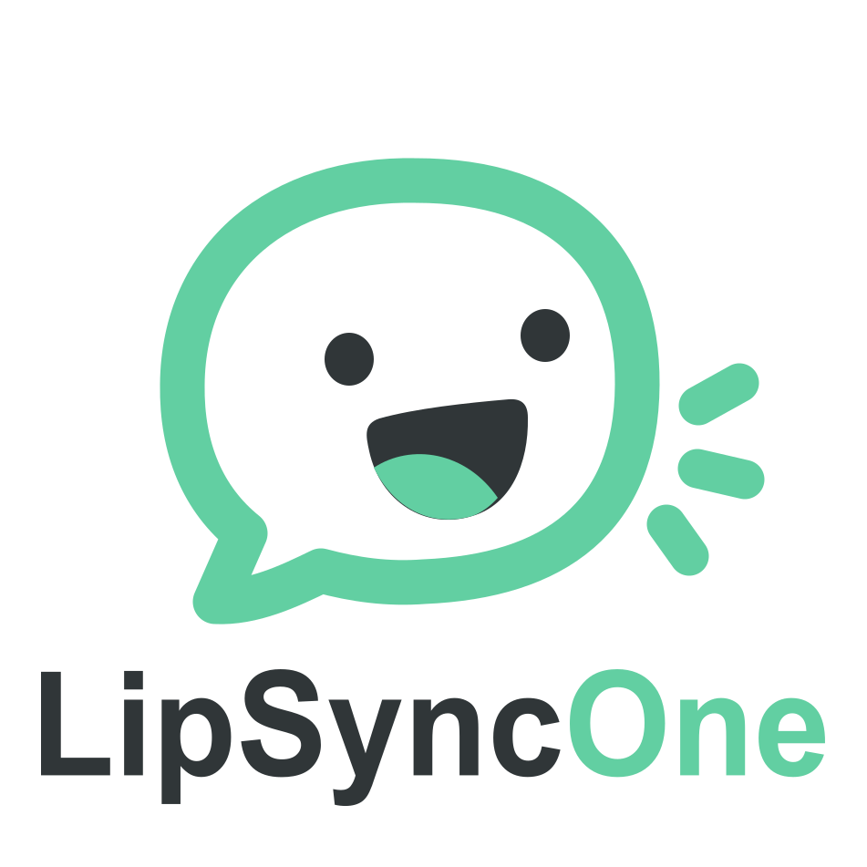
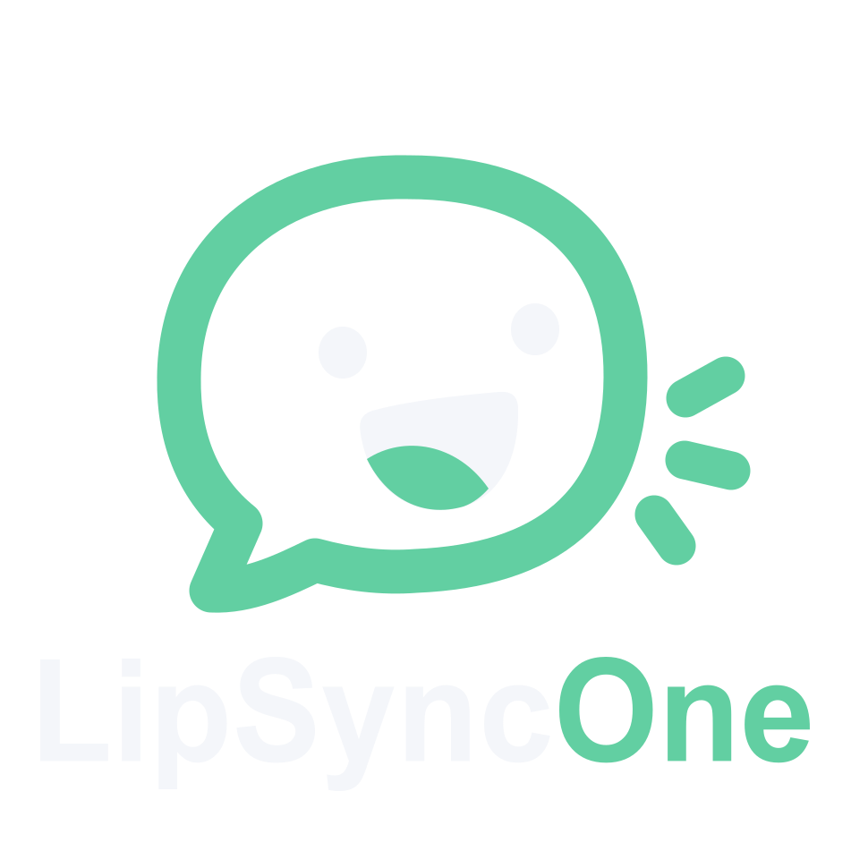

口画像2枚から始められる
閉じ口と開き口の2枚から始められます。必要に応じて、3枚やRhubarb A〜H/Xの9口形にも広げられます。
Windows用の口パク・目パチアニメーション作成アプリ


リップシンク One / Lip Sync One
立ち絵と音声から、口パクと目パチの2Dアニメーションを自動生成。LipSyncOneは、Windowsで使えるリップシンクジェネレーターです。背景透過の動画素材を書き出して、Premiere ProやDaVinci Resolveで実況・解説動画を仕上げられます。

POSITION
ゆっくり実況やVOICEVOXなどの音声合成を使った解説動画に。WAV・MP3の音声を解析し、立ち絵の口の差分を切り替えて、セリフに合う口パク素材を作れます。
背景を透明にして書き出した動画は、いつもの編集ソフトに重ねて、字幕やカット、効果と組み合わせられます。
立ち絵の差分を切り替える、2Dのコマアニメーション素材づくりに向いています。字幕やカット編集は、お使いの動画編集ソフトで仕上げてください。
FEATURES
閉じ口と開き口の2枚から始められます。必要に応じて、3枚やRhubarb A〜H/Xの9口形にも広げられます。
音声から口の動きを推定するオープンソースのRhubarb Lip Sync 1.14.0を使います。解析はPC内で行い、音声を外部へ送りません。
開いた目と閉じた目の2枚から使えます。中割を加えれば、よりやわらかなまばたきになります。間隔やばらつきも調整できます。
音声の配置や画像の表示時間を調整できます。画像の位置・大きさ・回転もプレビューを見ながら編集し、あとから開き直して続けられます。
口や目を全身画像と同じキャンバスサイズで用意すると、位置を合わせやすくなります。小さく切り出した透過PNGも、位置を調整して配置できます。
Premiere Proなどへ、そのまま動画素材として渡せます。ProRes 4444、FFV1、VP9 WebMに対応しています。
WORKFLOW
HOMEで新規プロジェクトを作り、アセットへ画像と音声を読み込みます。まずは無料サンプルのPNG 7枚とWAVで試せます。

「キャラクターを追加」で素材のグループを選ぶと、本体・口・目の画像をまとめて設定できます。画像と名前を確認して「適用」を押します。

キャラクターの音声行へWAVを配置すると、口パクの自動解析が始まります。あとから音量の影響度や無音しきい値を調整して、解析し直すこともできます。

最初は透明背景の「軽量WebM」が選ばれています。仕上げに使うソフトに合わせて形式を選び、表示範囲とサイズを確認して保存します。

EXPORT
背景を透明にした素材を、いつもの動画編集ソフトへ。初期設定は軽量WebMです。
| 用途 | 形式 |
|---|---|
| Adobe Premiere Pro | ProRes 4444 AlphaMOV / PCM |
| 可逆アルファマスター | FFV1MKV / FLAC |
| 軽量アルファ動画 | VP9 AlphaWebM / Opus |
| Windowsでの確認用 | H.264 カラーキーMP4 / AAC・透明度なし |
LOCAL FIRST
FOR
NOT FOR
口だけが違う全身画像2枚から始められます。「キャラクターを追加 → 全身画像2枚で口パク」で閉口・開口画像を指定します。本体と口を分けたパーツ方式も使えます。目パチを付ける場合は、開いた目と閉じた目の差分も用意します。差分画像の準備方法を確認してください。
日本語のセリフを収録したWAV・MP3を読み込んで解析できます。口形は音声からの推定なので、声や発音によって結果が変わります。音声解析と調整の手順をご覧ください。
透過PNGを使い、アルファ付きProRes 4444・FFV1・VP9 WebMへ書き出せます。Premiere ProやDaVinci Resolveで仕上げる素材にはProRes 4444を用意しています。透明動画の書き出し方法を確認できます。
日本語表記は「リップシンク One」、英語表記は「LipSyncOne」です。「Lip Sync One」も同じ製品名の表記です。
音声に合わせてキャラクターの口を動かす、リップシンク（lip sync・口パク）の作成ツールです。LipSyncOneは口の差分画像を切り替えてアニメーションを作り、動画素材として書き出します。口パクの自動生成と調整方法を案内しています。
開いた目と閉じた目の画像から、目パチ（まばたき・瞬き）のアニメーションを自動で付けられます。半閉じの中割を加え、間隔やばらつきを調整することもできます。目パチの設定方法をご覧ください。
Windows 11 x64用のアプリをインストールし、キャラクターの本体・口・目の差分画像と音声を読み込みます。口パクと目パチを付けた2Dアニメーションを、背景透過の動画素材として出力できます。無料サンプルから試せます。
音声合成ソフトから書き出したWAV・MP3や録音音声を読み込めます。ゆっくり実況、ゲーム実況、解説動画のキャラクター素材づくりに使えます。音声や立ち絵は、使用する素材の利用規約に従ってください。
FREE SAMPLE
女の子2種類のパーツ素材と、男の子の全身画像2枚から選べます。サンプル1・2は口パクと目パチ用のPNG 7枚と音声、サンプル3は口パク用の閉口・開口PNG 2枚と猫使アルの説明音声です。すべて無料でダウンロードできます。
サンプル1・2は、ZIPを展開して画像7枚と音声を読み込みます。「キャラクターを追加」でsample_girl（サンプル1）またはsample_silver（サンプル2）を選び、WAVをそのキャラクターの音声行へ配置してください。詳しい手順を見る
サンプル3は、口以外の画素が一致するよう調整した全身画像です。切り抜き不要で口パクを試せます。「キャラクターを追加 → 全身画像2枚で口パク」から、この2枚を指定できます。サンプル3の使い方を見る
画像はAIで生成・位置調整したものです。音声キャラクターの公式立ち絵ではありません。
音声：サンプル1はVOICEVOX:櫻歌ミコ（ノーマル）、サンプル2はVOICEVOX:春日部つむぎ（ノーマル）、サンプル3はVOICEVOX:猫使アル（ノーマル）です。サンプル1・2には短い「こんにちは」音声も含みます。
音声を使った作品を公開する際は、使用した音声に応じて「VOICEVOX:櫻歌ミコ」「VOICEVOX:春日部つむぎ」「VOICEVOX:猫使アル」と表記してください。
利用・再配布は同梱READMEと櫻歌ミコ利用規約・春日部つむぎ利用規約・猫使アル利用規約・VOICEVOX利用規約に従ってください。
DOWNLOAD
Windows 11 x64向けのv0.3.8を公開しています。セットアップEXEを実行し、スタートメニューから起動してください。以降は「ヘルプ → アップデートを確認」から手動で確認し、「更新して再起動」で更新できます。起動時の自動確認は行いません。旧ポータブル版からも、今回はセットアップEXEでインストールしてください。保存済みのプロジェクトと素材はそのまま使えます。
v0.3.8を公開しました。音声ごとに「日本語・その他／英語」を選べるようになり、選択は保存して再解析でも引き継がれます。英語は同梱の英語用モデルで解析します。ダークテーマを少し明るい中立グレーへ調整し、ライトテーマも文字や枠を読みやすく整えました。
0.3.7からは「ヘルプ → アップデートを確認」で更新できます。起動時の自動確認は行いません。
セットアップEXEにはWindowsの実行ファイル署名を付けていません。Windowsの警告が表示された場合は、公式配布元から入手したファイルか確認してください。
SUPPORT
LipSyncOneは無料で利用できます。気に入っていただけた場合は、BOOTHでの支援購入またはKo-fiから任意で開発を応援できます。